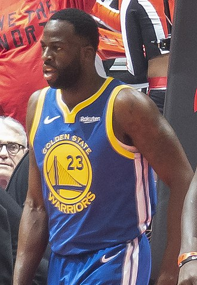

DRAYMOND GREEN

Draymond Jamal Green Sr. is an American professional basketball player for the Golden State Warriors of the National Basketball Association.
Green, who plays primarily at the power forward position, is a three-time NBA champion and a three-time NBA All-Star.
In 2017, he won the NBA Defensive Player of the Year.
Born: 4 March 1990 (age 31 years), Saginaw, Michigan, United States
Height: 1.98 m
Salary: 1.64 crores USD (2017)
NBA draft: 2012 (Round: 2 / Pick: 35)
Current teams: Golden State Warriors (#23 / Power forward, Center), MORE
Children: Kyla Green, Draymond Jamal Green
Siblings: Braylon Green, Torrian Harris, LaToya Barbers, Gabby Davis, Jordan Davis